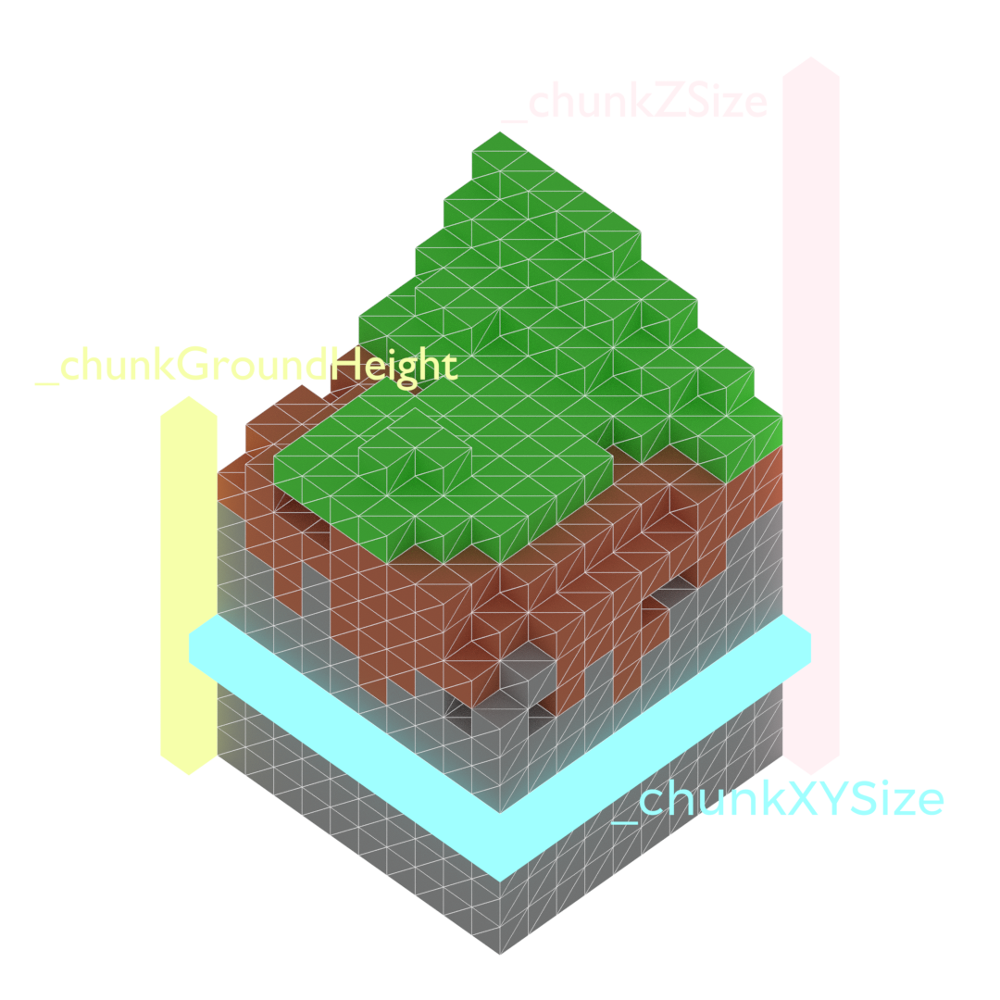
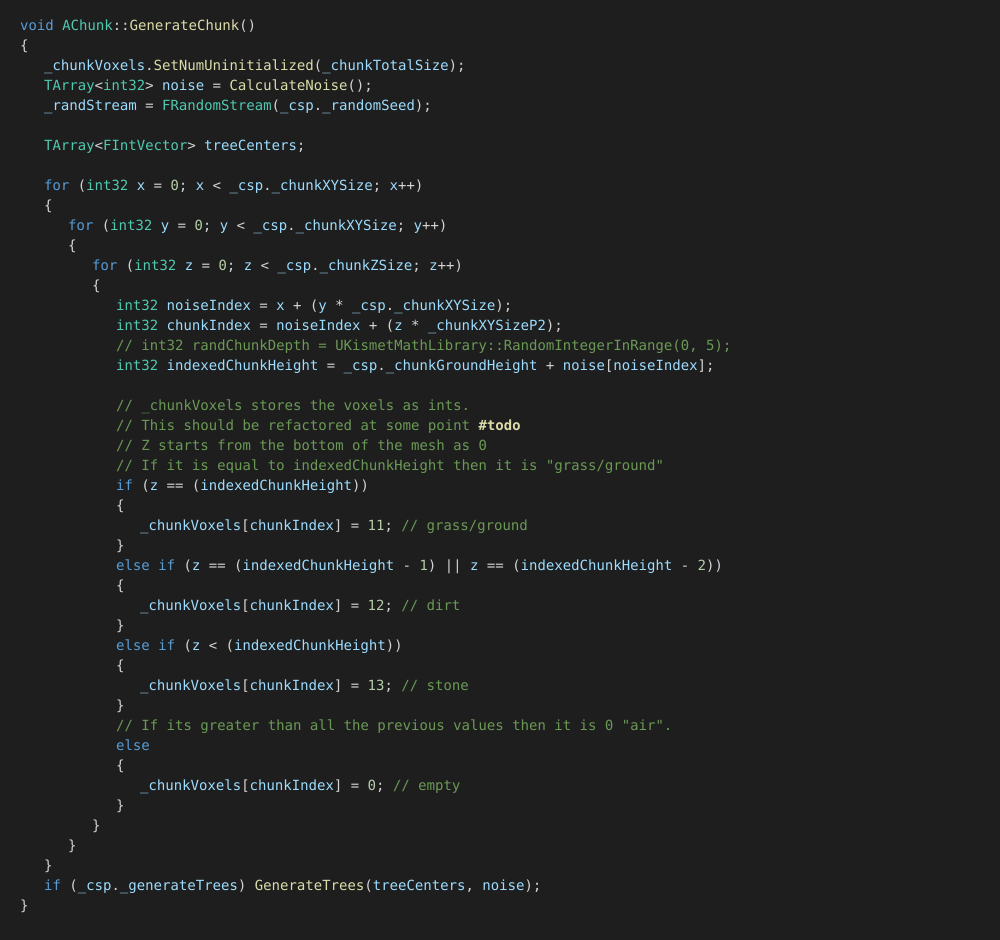
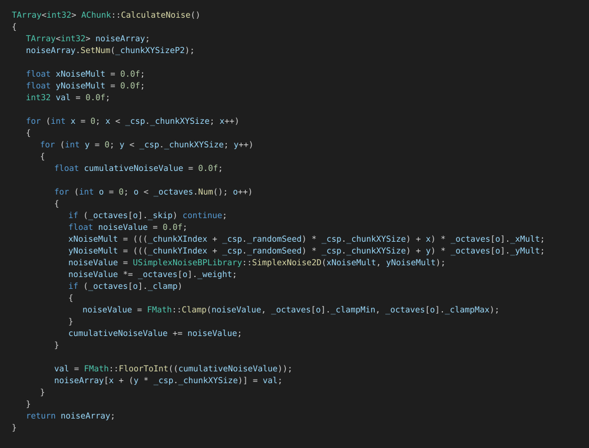
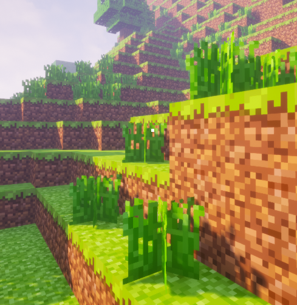

WorldCraft
WorldCraft was my final-year university module project: a Minecraft-inspired technical demo built solo, from scratch, in Unreal Engine 4 and C++. Terrain is procedurally generated and voxelized, split into chunks, and streamed out into an effectively infinite world driven by simplex noise.
The Project
The brief for the module was open-ended, so I chose to chase something I found genuinely interesting: procedural generation of voxelized meshes that spawn in chunks to form an infinite world, sampled from simplex noise. I built on top of Sebastian Lague's tutorial series on the subject and DevDad's Simplex Noise plugin for the underlying noise function, then extended both considerably, reworking the code to be more extensible, more easily configurable from the editor, and more efficient at runtime.
Chunked Voxel Terrain
The world is divided into AChunk actors, each owning
a flat TArray<int32> of voxel IDs sized by a
shared FChunkSpawn config struct: XY size,
Z (height) size, a base ground height, and the world-space size
of an individual voxel. A 3D position within the chunk flattens
to a single array index with
x + (y * chunkXYSize) + (z * chunkXYSizeP2).

Each column's voxel type falls out of a single height comparison against the ground height plus that column's noise value: the exact height is grass, the next two layers down are dirt, everything below that is stone, and everything above is air.

Multi-Octave Simplex Noise
Ground height per column comes from an FOctaves array
exposed to the editor: each octave has its own X/Y sampling
multiplier, weight, and an optional clamp range, so a designer can
layer a broad, low-frequency octave for rolling hills with sharper
high-frequency octaves for detail, entirely from the inspector
without touching code.

Every enabled octave is sampled with SimplexNoise2D
at a chunk-offset coordinate (so neighbouring chunks line up
seamlessly), scaled by its weight, optionally clamped, and summed;
the cumulative value is floored to an integer and stored per
column for the whole chunk to reuse.
Procedural Mesh & Face Culling
Chunk meshes are built with ProceduralMeshComponent,
one mesh section per material/voxel type so each renders with the
right texture. Rather than emitting a full cube per solid voxel,
UpdateMesh() checks each of a voxel's six neighbours
and only emits the quad for a face whose neighbour is air (or off
the edge of the chunk), a simple hidden-face culling pass
that keeps triangle counts down on a world made of tens of
thousands of voxels per chunk.
Trees & Instanced Grass
Vegetation is placed with a per-chunk seeded FRandomStream
so a given chunk always regenerates identically. Walking every
surface column, each has an independent chance to spawn a tuft of
grass and a much smaller chance to become a tree centre; tree
canopies are then built as a randomized sphere-ish cluster of leaf
voxels around a randomized trunk height, with a bit of noise
thrown into which candidate leaf positions actually fill in so
canopies don't come out perfectly spherical.
Grass doesn't get baked into the chunk mesh at all: it's
flagged as its own voxel ID and routed through a Blueprint-native
AddInstanceVoxel event, which drops an Instanced
Static Mesh instance at that position instead. Thousands of grass
blades share a single draw call and transform buffer rather than
each costing their own mesh section.

Evaluation
WorldCraft did what it needed to as a module project: a working, infinite, chunked voxel world with configurable noise-driven terrain, vegetation, and a mesh pipeline efficient enough to stream new chunks without stuttering. It's openly built on Sebastian Lague's tutorial series and DevDad's noise plugin, and I'd credit both rather than pretend otherwise. The value I added was in making the system more extensible and configurable, and in the face-culling and instancing work to keep it performant.
The biggest thing I'd revisit is exactly what the source still
flags with a #todo: voxels are stored as raw
int32 IDs with meaning encoded by magic numbers
(11 for grass, 12 for dirt, 13 for stone, and so on). It works,
but a proper voxel/material data asset would make the system far
easier to extend with new block types without hunting down every
place an ID is compared.
The full source is up on GitHub for anyone who wants to see how the chunking, noise, and meshing fit together.